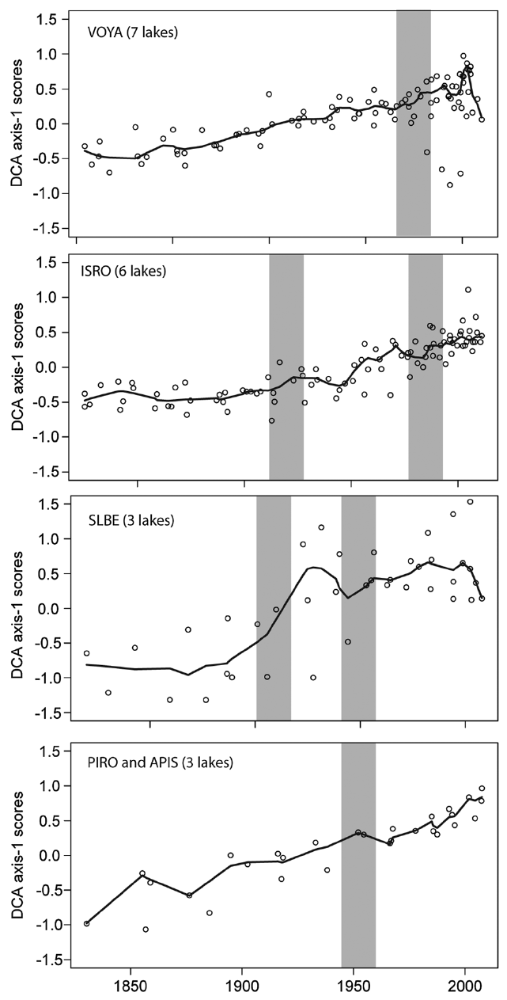
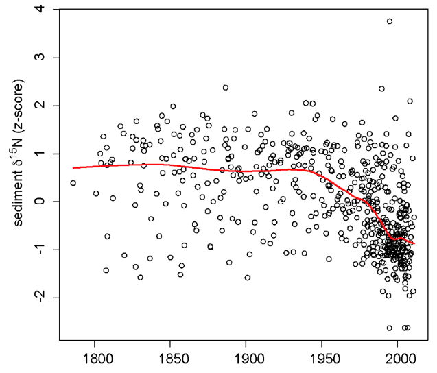

LOESS revisited
It’s fair to say I have gotten a bee2 in my bonnet about how palaeolimnologists handle time. For a group of people for whom time is everything, we sure do a poor job (in general) of dealing with it in when it comes time to analyse our data. In many instances, “poor job” means making no attempt at all to account for the special nature of the time series. LOESS comes in for particular criticism because it is widely used by palaeolimnologists despite not being particularly suited to the task. Why this is so is perhaps due to it’s promotion in influential books, papers, and software. I am far from innocent in this regard having taught LOESS and it’s use for many years on the now-defunct ECRC Numerical Course. Here I want to look at further problems with our use of LOESS, and will argue that we need to resign it to the trash can for all but exploratory analyses. I will begin the case for the prosecution with one of my own transgressions.
The figure above comes from one of the chapters I wrote in the infamous Numerical Methods book in the Developments in Paleoenvironmental Research series (Simpson and Hall, 2012). The aim here was to show the common pattern in reconstructed pH using three different calibration methods. In my defence, this was intended as an diagnostic plot but this may not have been clear in the text. I’d certainly be embarrassed if anyone took this usage to be any indication of how to go about hypothesis “testing” on the trend in reconstructed pH.
There are two things wrong with this plot/usage
- The usual problem; no justification for the span used (0.1)
- Failure to account for between-method variation
If you are doing an exploratory analysis, the choice of span is somewhat arbitrary; it doesn’t really matter what you use, and you might use several spans to get a feeling for potential features that may be present in the data. However, if you are planning on using the trends or features identified in this exploratory analysis to support some idea or hypothesis, then you’re going to get into a world of trouble.
First, there’s the potential for over-fitting. This is actually quite high with palaeo data as all but the most skeleton of sequences will have some amount of autocorrelation; something I’ve covered before.
Second, just because you get a particular “fit” using this span it doesn’t mean the identified features in the smoother are significant. Can they be distinguished from the noisy background? Answering this question requires estimates of the uncertainty in the fitted function and calculation of the derivatives of the fitted smooth curve. The first derivative of the fitted smooth is equivalent to the slope (or coefficient) of a simple linear regression. In this model, we assess whether the estimated slope is consistent with the null hypothesis of a trend of 0 using a t statistic, which is the value of the slope estimate divided by its uncertainty (the standard error). Conceptually we can think of this as forming a 100(1 - α) confidence interval and asking if 0 (the null hypothesis slope value) is included within this interval.
The equivalent for smoothers and splines is to compute the first derivative of the fitted smooth. Doing this analytically is often not straightforward, but we can use the method of finite differences to approximate the first derivative of the smoother. Using standard errors of the derivative or posterior simulation we can compute confidence intervals on the derivatives and thus determine where along the curve there is sufficient evidence to reject the null hypothesis of no trend.
The linked posts explain this process and illustrate it using generalised additive models. The key point to remember though is that the model, even a LOESS one, fitted to the data, is uncertain; it contains a degree of uncertainty because we’ve estimated things from the sample of data we happened to collect. As a result, it is inappropriate to simply interpret a fitted trend as is, without also considering the uncertainty in the estimation of the trend.
The other important thing that often gets overlooked is the bias variance trade off. If you fit a wiggly trend as compared to a smooth trend, all things being equal, the wiggly one will have lower bias and higher variance and the smooth one higher bias and lower variance. Here, by variance we mean uncertainty; change the data a bit and high variance fits will change a lot, hence the high uncertainty. With LOESS smoothers, low span values fit potentially high variance low bias models. Invariably these will be over-fitted, and highly uncertain, unless there is a lot of data from which to estimate such a wiggly trend and you’ve properly accounted for the stochastic properties of the data such as any autocorrelation.
The other problem with the consensus reconstruction in the above figure is the failure to account for the between-method variance and the correlation between fitted values derived using the same calibration method. Such problems are commonly handled with a mixed effects model, but as we only have three “subjects”, that isn’t an option here. Ideally then, we’d fit three separate trends, one per method, plus a separate mean for each method. Then we could compare this model with one that had a separate mean per method but just a single common trend. The key point to remember here is that the residuals should not contain much or any trace of a trend nor of which method was used. In the figure above this is clearly not the case and as a result it makes it difficult to do formal inference on the fitted smoother.
A more recent example of the latter point is Hobbs et al. (2016). Below, I reproduce figures 6 and 9 from the paper (Hobbs et al., 2016)

Here the problems of failing to account for core-specific trends are worse than my earlier example. In Figure 6, Hobbs et al. (2016) show DCA axis 1 scores for cores from parks around the great lakes, grouped at the park level such that each panel includes data from at least three different cores. The first problem here is that throughout the authors use LOESS but never state how they determined the span used in the figures. The second issue is that the reader can’t unpack the site-specific trends because the data for each site isn’t differentiated by plotting symbols or colour. Most importantly however, we see clear evidence that the LOESS trend is different to some or all of the trends or even the data, especially in the VOYA and SLBE panels. This is not so much showing a consensus but rewriting history entirely — the fitted trend in some places doesn’t even go anywhere near the data! This is an ever-present problem with this kind of analysis.
Worse still is Figure 9 from the same paper (Hobbs et al., 2016), shown below

This figure shows an impressive amount of δ15N values of bulk organic matter from many cores across the study region. Whilst it is clear if you look at the detail that there are many more lower δ15N values around the turn of the 20th century than before, the individual trends in δ15N are all obfuscated by the presentation. It is not clear what the LOESS smoother is showing at all; as it is a scatter plot smoother, it is showing pattern in the data points irrespective of grouping at the core level. As such we can’t expect that it is representative of a common trend at all; which is what the authors surely hoped it would do!
The z-score standardisation (centring and standardising each core to have zero mean and unit variance) used here also complicates the interpretation; the axis is no longer in δ15N values ‰ but in standard deviation units from each core mean. By giving each core the same variance we actually gloss over differences in variance which might have ecological or environmental significance. It would be better to model these features explicitly.
A solution?
It’s all well and good being critical of my work or that of others’, but unless that critique comes with suggestions for ways to do better in the future, as a field we can’t progress. So, what could be done to provide a better analysis in both these cases? Two things in particular spring to mind
- fit an explicit model that includes terms mapped to the features of the data, and
- properly estimate the degree of smoothness in the data/trend
Here on this blog I’ve discussed ways to handle point 23, and I have some additional thoughts based on new types of smoothers and ideas from spatial statistics that happen to fit in with the GAM approach and spline bases. These ideas form the basis of a paper I’m writing at the moment.
Point 1 could be handled in a variety of ways;
Fit a stochastic time series model using either maximum likelihood methods or Bayesian estimation. Such models include state-space formulations of the classic ARIMA-type models. Such models can account for site-specific effects, underlying latent trends that we have noisy observations from, and a proper accounting of the irregular sampling and change of support4 inherent to most sediment core records.
For the consensus reconstruction example, a GAM with three separate trends or a common trend plus three separate departure trends would allow the explicit modelling of the features of interest. This is most easily achieved using
byvariable smooths in the mgcv package usinggam(). If fitting a common trend and site specific departures from this common trend, the site specific departures need to be modelled using penalties on the first derivative (usually penalties are on the second derivative) to penalise departure from a flat function which represents no departure from the common trend.For the Figure 6 example from Hobbs et al. (2016), there are enough cores to potentially model them as random effects, again as site specific trends or as common trend plus site-specific departures. The random effect splines are an efficient way of fitting many trends, and can be fitted using the factor-smooth interaction basis (
s(time, fac, bs = "fs")usinggam()in mgcv for smooths oftimefor each level of factorfac) or via tensor product smooths combining a marginal smooth fortimeand a marginal random effect spline for each level offac.For the Figure 9 example, there are certainly enough cores to warrant a random effect spline approach as mentioned above.
This blog post is already long-enough and I don’t have time to go into specific details of fitting random effect splines, by-variable splines, or splines based on ideas from kriging, here. In the next few months I’ll write up posts on these methods as both areas are being developed into manuscripts; the random effect spline methods is a collaboration with Eric Pedersen, David Miller, and Noam Ross.
In the consensus reconstruction and both the Hobbs et al. (2016) examples a strong argument can be made for modelling a common trend plus site specific departures because in both cases interest is in trying to identify common trend and detailed site- or method-specific trends are of secondary concern.
Whither LOESS?
Where does this leave LOESS? I think it is clear that LOESS is perfectly acceptable as an exploratory method only. It makes few assumptions about the data and because the user needs to specify a span/bandwidth parameter it alows for interactive investigation of a range of potential temporal trends of varying smoothness. As a more formal method for fitting models with which one can actually answer scientific questions, LOESS is far less useful. This isn’t the fault of LOESS; it was designed as a scatterplot smoother, not for fitting multivariate time series models. The issue is rather in our reliance on LOESS without understanding or acknowledging its deficiencies for actual model fitting.
The problem of arbitrary choices of span parameters in LOESS can be worked around with a cross-validation procedure suited to handling temporally autocorrelated data. But the multivariate time series issues I’ve discussed in detail here are less easily solved. It’s not that they can’t be solved; the original GAM software used LOESS smooths as part of the formal GAM procedure. But this software doesn’t make it easy to fit common trend plus site-specific difference trends as would be required for both the examples discussed above. The gam() function from mgcv does allow this to be done with relative ease, hence this approach is something I’ve been exploring. The Bayesian approaches are probably our best solution long-term to modelling palaeoecological data because of their flexibility. But that flexibility comes at a price; complexity.
And that brings me to my final point. As a field, palaeolimnology really needs to take more seriously training in quantitative methods, and in particular modern methods such as the GAMs that I’ve found most useful and in Bayesian techniques in general. Where young palaeolimnologists get any training it is most often in the traditional methods that were adopted from a time before we had real computing power available to use and before Statistics, the science, had developed methods to really handle the sorts of data we were generating. We are currently going through a revolution in the development of methods for use with multivariate ecological data and complex time series data. Palaeolimnologists risk being left behind here and this worries me. A lot. I mainly worry because at best we are paying lip service to the deficiencies in the field in terms of our quantitative prowess. And it’s is beginning to show in the quality of science we do and the ways we try to answer important ecological and environmental questions.
I find this troubling indeed…
References
References
Footnotes
an entire hive is perhaps more apt!↩︎
an entire hive is perhaps more apt!↩︎
If you think about what we record in our sediment samples, it is clear that this sequence is a highly modified version of the real per-unit time sedimentation that occurred in the lake. Hence we wish to make inference on something we haven’t actually observed directly. We can model the unobserved sequence as a latent trend polluted by noise. Because of compaction and bioturbation etc, each sediment slice represents different amounts of time. In other words each observation is supported by contributions from one or more unit-time observations from the unobserved latent trend. Samples from 100 years ago might be support by 4 years of observations from the latent process, but near the top of the core a single year from the latent process might be represented in each of the observations. This problem/feature is known as change of support.↩︎